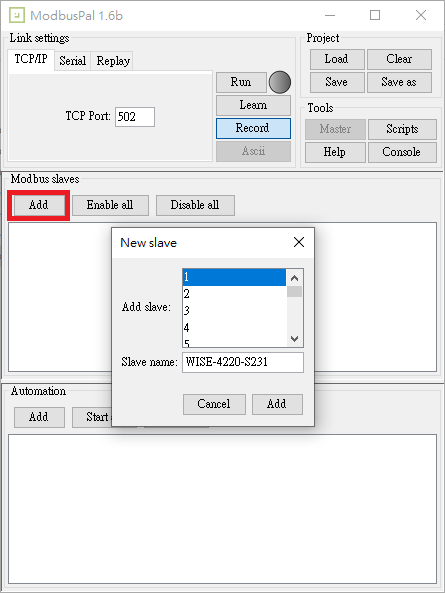
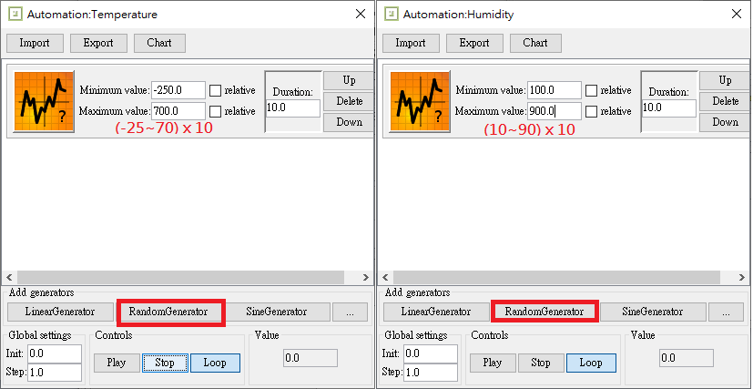
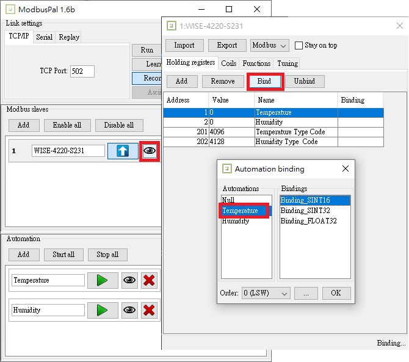
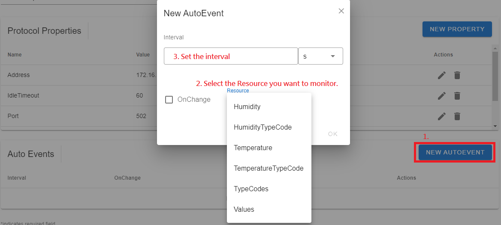

Modbus
This page describes how to connect Modbus devices to EdgeX. In this example, we simulate the Advantech WISE-4220-S231 (2.4G WiFi IoT Wireless Module with Temperature & Humidity Sensor) instead of using a real device. This provides a straightforward way to test the device service features.
For more detail information to setup EdgeX Modbus, it might reference to
https://docs.edgexfoundry.org/2.0/examples/Ch-ExamplesAddingModbusDevice/
Modbus entity Number and Address
It is important to make a distinction between Modbus entity number and entity address:
- Entity numbers combine entity type and entity location within their description table.
- Entity address is the starting address, a 16-bit value in the data part of the Modbus frame. As such its range goes from 0 to 65,535 (0000 to FFFF in the packets)
In the traditional conventio, entity numbers start with a single digit representing the entity type, followed by four digits representing the entity location:
- coils numbers start with 0 and span from 00001 to 09999,
- discrete input numbers start with 1 and span from 10001 to 19999,
- input register numbers start with 3 and span from 30001 to 39999,
- holding register numbers start with 4 and span from 40001 to 49999.
For data communications, the entity location number (1 to 9,999) is translated into a 0-based entity address (0 to 9,998) by subtracting 1. For example, for holding registers starting at number 40100, address (starting address) will be 99 etc.
For more detail information about the Modbus protocol, it might reference to Coil, discrete input, input register, holding register numbers and addresses
Modbus Register Table
You can find the available registers in the user manual.
| Address (4X) | Channel | R/W | Description |
|---|---|---|---|
| 40001 | Temperature | R | Temperature Value (0.1) |
| 40002 | Humidity | R | Humidity Value (%) |
| 40201 | Temperature Type Code | R | Type Code |
| 40202 | Humidity Type Code | R | Type Code |
| Type Code | Sensor type and unit |
|---|---|
| 4096 (0x1000) | Temperature (°C) |
| 4097 (0x1001) | Temperature (°F) |
| 4098 (0x1002) | Temperature (°K) |
| 4128 (0x1020) | Humidity (%) |
Modbus Device (Simulator)
Download the ModbusPal from the https://sourceforge.net/projects/modbuspal/files/modbuspal/ .
To simulate sensors, such as temperature, voltage, and humidity, do the following:
Add a mock device

Add holding registers number (1~65535)
The Address (4X), for example, Temperature 40001 start with prefix "4", it's a holding register number, in ModbusPal, just input the address number
0001(without prefix).
The ModbusPal support value auto-generator, which can bind to registers

Bind the auto-generator values to registers

Run the simulator and the value auto-generator
Create a Device profile (YAML)
Create the device profile (YAML) and save it as WISE-4220-S231.yaml, as shown below:
Note: The startingAddress attribute is 0-based. The Temperature Address (4X) number is 40001, the startingAddress will be 0.
name: "WISE-4220-S231"
manufacturer: "Advantech"
model: "WISE-4220-S231"
labels:
- "modbus"
- "Temperature"
- "Humidity"
- "Wireless"
description: "2.4G WiFi IoT Wireless Module with Temperature & Humidity Sensor"
deviceResources:
-
name: "Temperature"
isHidden: false
description: "Temperature Value x 10 (10.5 to 105)"
attributes:
{ primaryTable: "HOLDING_REGISTERS", startingAddress: 0, rawType: "Int16" }
properties:
valueType: "Float32"
readWrite: "R"
scale: "0.1"
-
name: "Humidity"
isHidden: false
description: "Humidity Percentage x 10 (10.5 to 105)"
attributes:
{ primaryTable: "HOLDING_REGISTERS", startingAddress: 1, rawType: "Int16" }
properties:
valueType: "Float32"
readWrite: "R"
scale: "0.1"
-
name: "TemperatureTypeCode"
isHidden: false
description: "Temperature Type Code"
attributes:
{ primaryTable: "HOLDING_REGISTERS", startingAddress: 200, rawType: "Int16" }
properties:
valueType: "UInt16"
readWrite: "R"
-
name: "HumidityTypeCode"
isHidden: false
description: "Humidity Type Code"
attributes:
{ primaryTable: "HOLDING_REGISTERS", startingAddress: 201, rawType: "Int16" }
properties:
valueType: "UInt16"
readWrite: "R"
deviceCommands:
-
name: "TypeCodes"
readWrite: "R"
isHidden: false
resourceOperations:
- { deviceResource: "TemperatureTypeCode" }
- { deviceResource: "HumidityTypeCode" }
-
name: "Values"
readWrite: "R"
isHidden: false
resourceOperations:
- { deviceResource: "Temperature" }
- { deviceResource: "Humidity" }
In the Modbus protocol, EdgeX provide the following attributes:
1.primaryTable: HOLDING_REGISTERS, INPUT_REGISTERS, COILS,
DISCRETES_INPUT
2.startingAddress This attribute defines the zero-based startingAddress in Modbus device. For example, the GET command requests data from the Modbus address number 40001 to get the temperature data, so the starting register address should be 0. (without prefix "4")
| Address (4X) | Starting Address | Name | R/W | Description |
|---|---|---|---|---|
| 40001 | 0 | Temperature | R | Temperature Value x 10 (10.5 to 105) |
| 40002 | 1 | Humidity | R | Humidity Percentage x 10 (10.5 to 105) |
| 40201 | 200 | Temperature Type Code | R | Temperature Type Code |
| 40202 | 201 | Humidity Type Code | R | Humidity Type Code |
3.isByteSwap, isWordSwap: To handle the different Modbus binary data order, we support Int32, Uint32, Float32 to do the swap operation before decoding the binary data.
For example: { primaryTable: "INPUT_REGISTERS", startingAddress: "4", isByteSwap: "false", isWordSwap: "true" }
4.rawType: This attribute defines the binary data read from the Modbus device, then we can use the value type to indicate the data type that the user wants to receive.
We only support Int16 and Uint16 for rawType. The corresponding value type must be Float32 and Float64.
For example:
deviceResources:
-
name: "Temperature"
isHidden: false
description: "Temperature Value x 10 (10.5 to 105)"
attributes:
{ primaryTable: "HOLDING_REGISTERS", startingAddress: 0, rawType: "Int16" }
properties:
valueType: "Float32"
readWrite: "R"
scale: "0.1"
In the device-modbus, the Property valueType decides how many registers will be read. Like
Holding registers, a register has 16 bits. If the Modbus device's user manual
specifies that a value has two registers, define it as Float32 or Int32
or Uint32 in the deviceProfile.
Once we execute a command, device-modbus knows its value type and register type, startingAddress, and register length. So it can read or write value using the modbus protocol.
For a full list of device profile fields and their required values see the device profile reference.
Add a downlink device
Navigate to EdgeX > Downlink, then click the ＋ button.

Upload device profile (WISE-4220-S231.yaml) and fill the device information.

Note: The Address of modbus-tcp should NOT be
127.0.0.1orlocalhost(loopback), it should be a valid public IP address or a reachable FQDN.Add AutoEvent
The EdgeX device service will polling the device value based on your configuration. 
Click SAVE to save the device configuration